巴威颱風改道
原訂 7/11 晚上的班機，因巴威颱風臨時取消。
在機場多等了一整夜，直到 7/12 凌晨四點才從桃園起飛——啟程整整晚了一天。沒想到颱風卻意外多留了半日伊斯坦堡：原本只是轉機路過，竟成了這趟旅程的第一個驚喜。
✦ 航班：TK025，原訂 7/11 21:45 出發，因颱風改至 7/12 凌晨起飛，經伊斯坦堡轉機後前往立陶宛首都維爾紐斯。
立陶宛 · 拉脫維亞 · 愛沙尼亞 2026年7月11日 — 7月21日
退而不休，行方致遠。維爾紐斯讀史，里加聽風，塔林看海——千年文化，一步一景，盡收行囊。
原訂 7/11 晚上的班機，因巴威颱風臨時取消。
在機場多等了一整夜，直到 7/12 凌晨四點才從桃園起飛——啟程整整晚了一天。沒想到颱風卻意外多留了半日伊斯坦堡：原本只是轉機路過，竟成了這趟旅程的第一個驚喜。
✦ 航班：TK025，原訂 7/11 21:45 出發，因颱風改至 7/12 凌晨起飛，經伊斯坦堡轉機後前往立陶宛首都維爾紐斯。
通過安檢後，第二航廈幾乎空無一人——平日熱鬧的國門，此刻像被時間按下暫停。

凌晨三點多的登機門長廊，只剩指示燈與腳步聲迴盪，忍不住拍下這難得一見的畫面。
7/12 中午抵達伊斯坦堡，轉機空檔安排市區觀光。

漫步走進舊城區的競技場廣場，埃及方尖碑與古柱靜靜佇立在石板路上，抬頭望見四周清真寺的圓頂輪廓——歐亞交會的第一站，比想像中更震撼。
午後的烈日從方尖碑後方透出，石碑上的古埃及象形文字在逆光下依然清晰可辨。
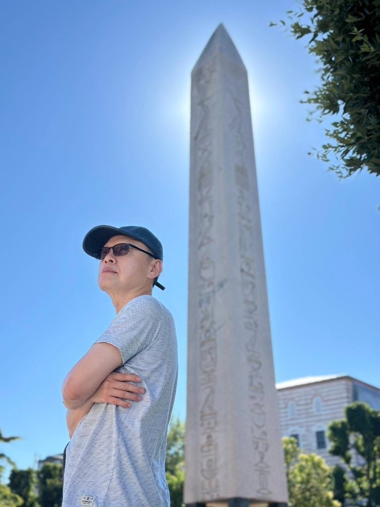
站在君士坦丁堡競技場前，抬頭仰望這根三千多年前從埃及運來的古石，忍不住停下腳步——穿越千年的歷史，就在這片藍天下靜靜佇立。
傍晚五點多，競技場廣場上遊客漸多，方尖碑在夕陽下投出長長的影子。

陽光從塔尖後方灑落，古埃及石刻與拜占庭遺跡在暮色中交疊——這座城市的時間感，在轉機的幾個小時裡已經深深烙印。
穿過舊城區巷弄，停下腳步望見托普卡匹宮的帝國門。

大理石拱門上鑲著金箔阿拉伯書法，陽光灑落時格外耀眼——只是路過這道門，已能感受到這座城市的厚重歷史。
走進香料市集，拱頂長廊兩側掛滿土耳其國旗，辛香、乾果與人潮交織成最熱鬧的感官體驗。

漫步其間，空氣裡瀰漫著胡椒與番紅花的氣味，為轉機的半日留下最鮮活的記憶。
穿過香料市集後，廣場旁這輛販售 Simit 的紅色麵包車格外醒目。

剛出爐的芝麻麵包香氣四溢，忍不住停下腳步品嚐，也留下這張充滿伊斯坦堡街頭風情的紀念照。
走進香料店，玻璃櫃裡堆滿紅椒粉、番紅花、胡椒與土耳其蘋果茶——色彩繽紛的調料牆讓人眼花撩亂。

忍不住湊近聞了聞，辛香撲鼻，感受到市集最誘人的那一面。
舊城區午後繼續漫遊，街角紅色頂篷下的烤栗子攤香氣撲鼻。
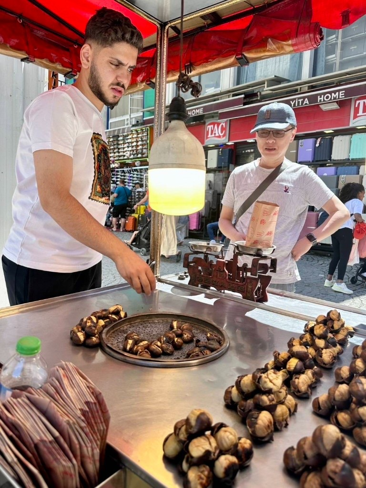
攤主正用老秤稱重，剛出爐的栗子堆在鐵台上裂開口——停下腳步買一袋熱騰騰的，也為今天的伊斯坦堡街頭留下這張照片。
午後來到藍色清真寺，六座尖塔與層疊圓頂在藍天下格外壯麗。
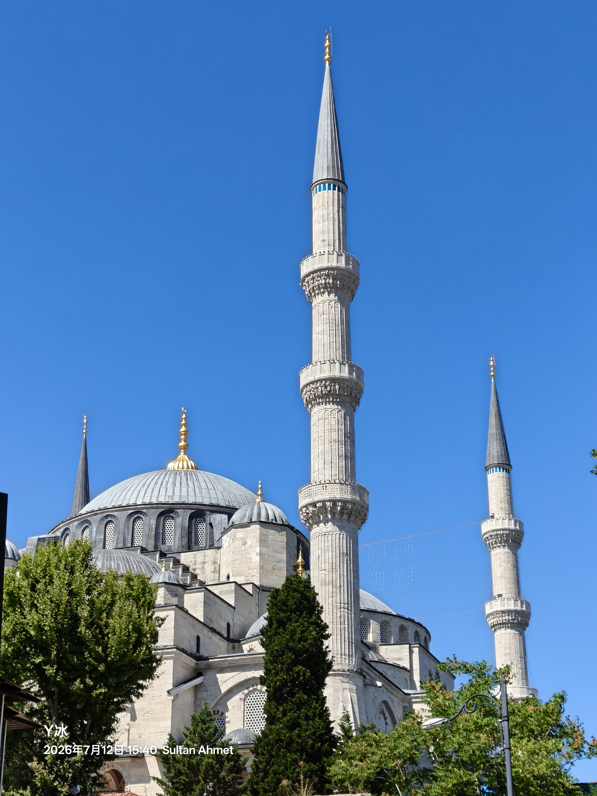
站在廣場上仰望，外牆的藍色磁磚在日光下閃著柔和的光——遠遠就讓人想走進去看看。
7/12 午後站在清真寺前的綠草坪上，圓頂與尖塔在晴空下格外壯麗。
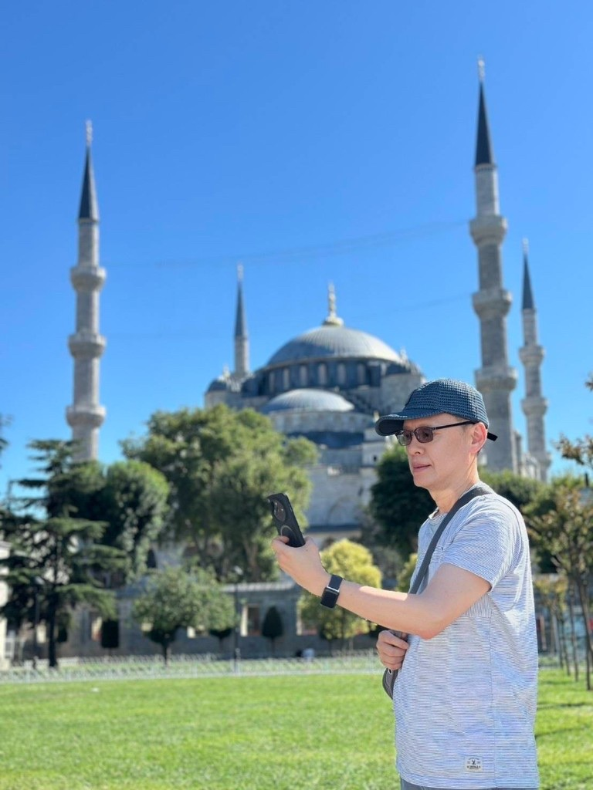
忍不住舉起手機，為這趟意外多留的伊斯坦堡半天留下一張紀念。
走進祈禱大廳，抬頭便是層層半圓頂與中央大圓頂，低垂的環形吊燈在磁磚牆面投下暖光。

室內安靜得幾乎能聽見自己的呼吸，感受到建築與信仰交織的莊嚴氛圍。
走近拱窗，彩繪玻璃將日光篩成藍、橘、綠的碎色，與牆面磁磚的花卉紋樣相互呼應。

光與色在這裡緩緩流動，忍不住停下腳步，為這一刻留下照片。
站在大廳中央仰望，中央圓頂的紋飾與四周書法帶在視線中徐徐展開。

抬頭望見這片穹頂，也為今天的伊斯坦堡轉機留下美好的回憶。
展示蘇聯時期統治立陶宛的歷史，含地下監獄。
立陶宛最大的複合式購物中心，下午自由活動。
早晨的老城陽光正好，轉過街角，這座紅磚教堂就這樣毫無預警地撞進眼裡——尖塔一層層往上收束，磚砌的線條細得像蕾絲。
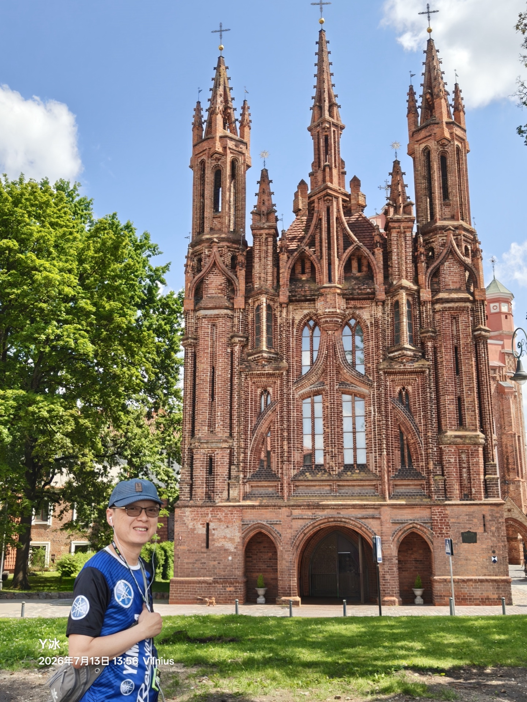
難怪傳說中拿破崙經過時，想把它放在掌心帶回巴黎。站在草坪前抬頭仰望好一會兒，才捨得請人幫我留下這張。
就在聖安娜教堂背後，另一座更高大的紅磚教堂靜靜矗立。
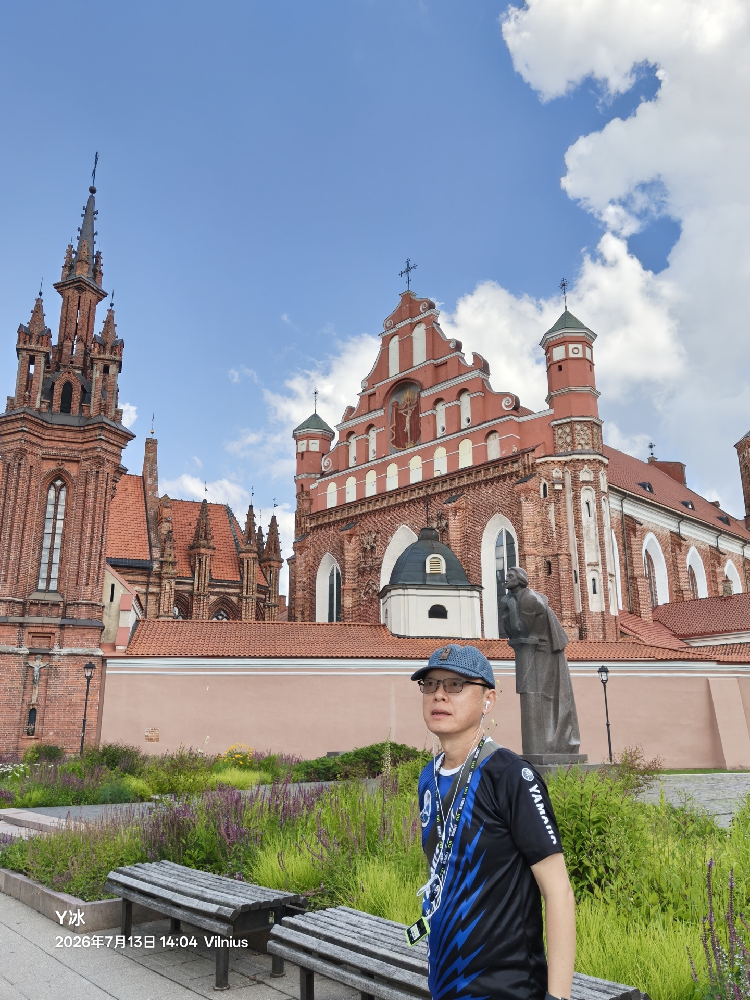
坐在長椅上歇腳，身旁是披著斗篷的詩人密茨凱維奇雕像，眼前紫色花圃開得正盛。午前的維爾紐斯不喧鬧，紅磚、綠意與藍天疊在一起，讓人只想放慢腳步慢慢看。
穿過小橋，就走進了「對岸共和國」——一個由藝術家自封的迷你共和國。
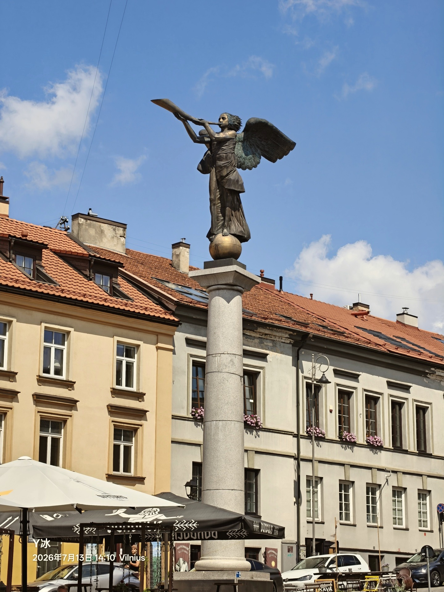
廣場中央的圓柱上，一位吹著號角的銅天使昂然佇立，據說是這裡自由精神的象徵。抬頭望著牠展翅的姿態，忍不住笑了，這座城市果然藏著不少頑皮的靈魂。
沿著河岸走，斑駁的石牆凹處嵌著一尾青銅美人魚，前方擺滿了白色小花。
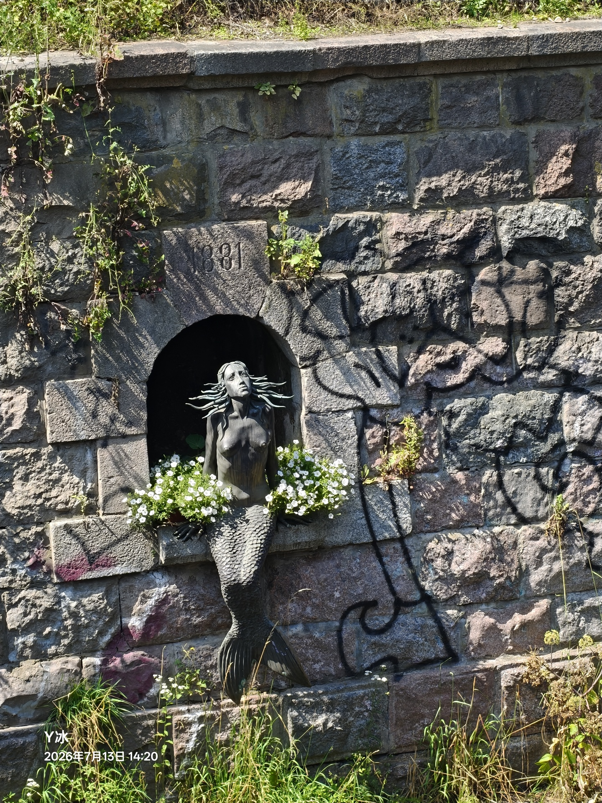
傳說只要被她的歌聲迷住，就會永遠留在這片街區。石牆上滿是塗鴉，她卻兀自安靜地望著河水——這種不修邊幅的自在，正是對岸共和國最迷人的地方。
牆上釘滿了一塊塊金屬銘牌，記著這個小共和國那部半開玩笑的「憲法」——「人人有權快樂」「貓有權在主人需要時不愛主人」。

站在其中一塊「我是貓王」的牌子旁邊，讀著這些荒誕又溫柔的句子，整個人都輕鬆了起來。
走著走著，一家小店門口蹲著兩隻表情浮誇的陶塑大公雞，翹著腿、瞪著眼，滑稽得讓人停下腳步。
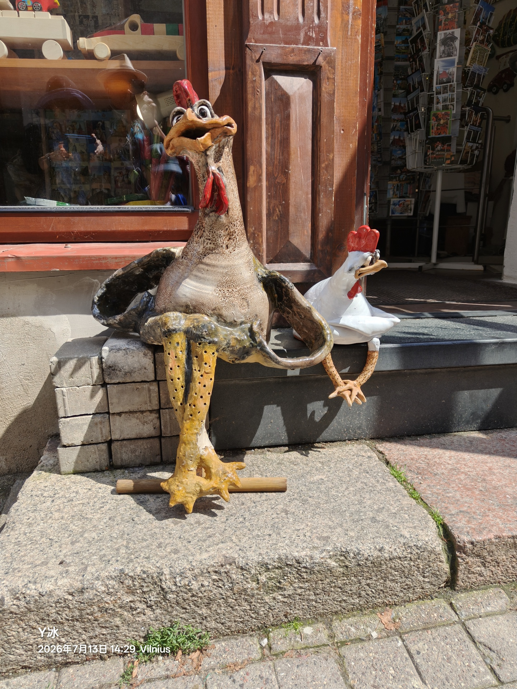
對岸共和國就是這樣，轉個彎總有意想不到的小驚喜，把嚴肅的古城逛成了一場尋寶遊戲。
巷子深處這扇雕花木門吸引了我——拱頂的鑄鐵窗花、被歲月磨得斑駁的木板，透著一股說不出的年代感。
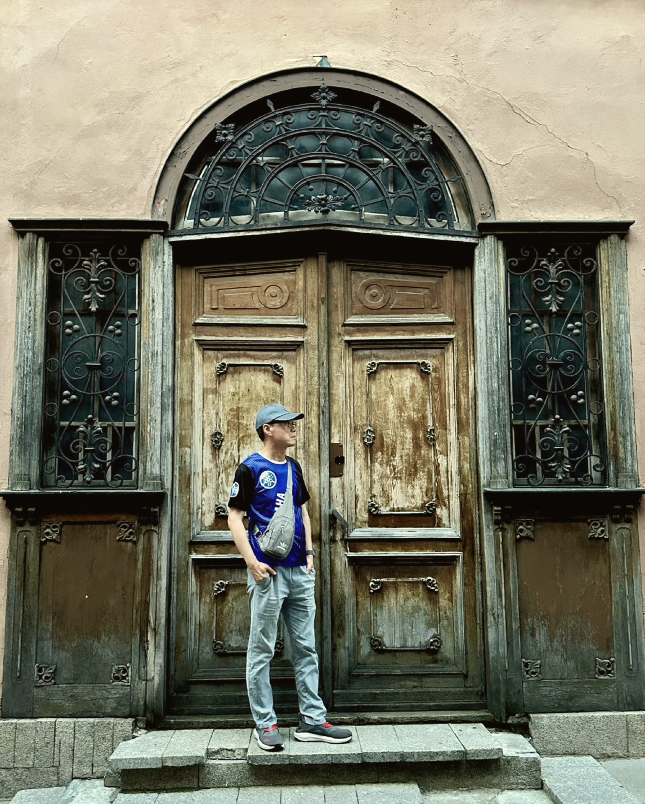
站在門前的石階上，彷彿門後就是另一個世紀。這樣不起眼卻耐看的角落，是老城最捨不得快步走過的風景。
逛到中午，餐桌上端來立陶宛最經典的 Cepelinai——碩大的馬鈴薯餃裹著肉餡，淋上濃稠肉汁，旁邊一坨酸奶油與新鮮蒔蘿。

粉紅色的冷湯更是驚艷，配上烤小土豆，視覺與味覺同時被這個波羅的海小國征服。飯後一塊層層細膩的蜂蜜蛋糕，為這頓午餐畫下甜蜜句點。
午後走進大教堂廣場，眼前豁然開朗。
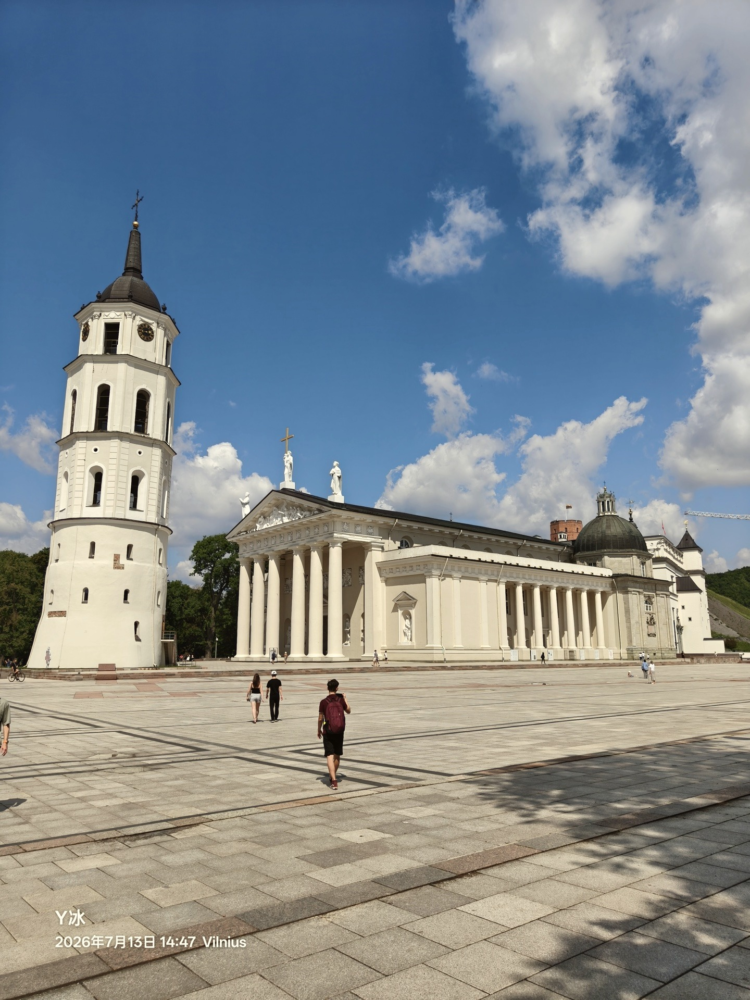
純白的新古典大教堂與獨立的鐘樓並肩而立，藍天上大片雲朵翻湧，廣場開闊得讓人想張開雙臂。石板地在陽光下泛著暖色，這裡是維爾紐斯的心臟，也是我對這座城市印象最深的一幕。
走近那座六十多公尺高的白色鐘樓，陽光正從塔尖後方灑落。
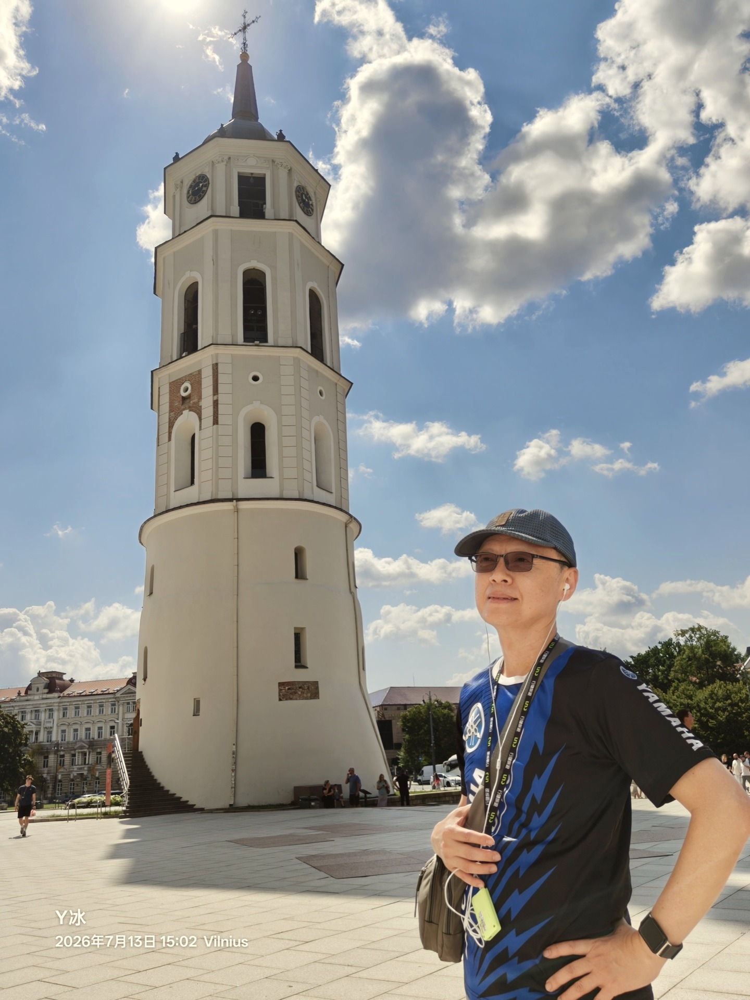
站在樓下拍照，逆光把雲勾出金邊，那一刻覺得旅行最好的獎賞，就是這種不用趕行程、能好整以暇曬著太陽的午後。
順著小丘往上爬，紅磚砌的格迪米納斯塔就佇立在山頂。
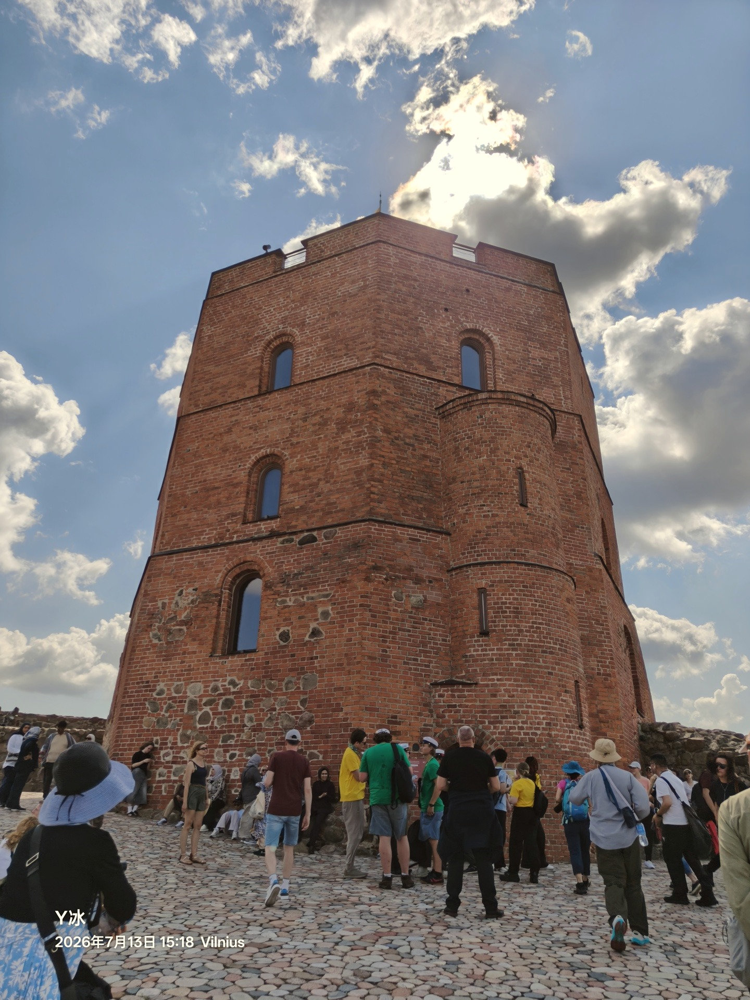
厚實的石基上是溫暖的紅磚塔身，塔頂雲層裂開一道口子，陽光噴薄而出。塔前擠滿了世界各地的遊客，大家都仰著頭——這座塔守著維爾紐斯的起點，也守著一整座城的天際線。
登上塔頂，整座老城在腳下攤開——紅瓦屋頂綿延到天邊，教堂的圓頂與尖塔點綴其間，遠處還能望見剛才走過的大教堂。
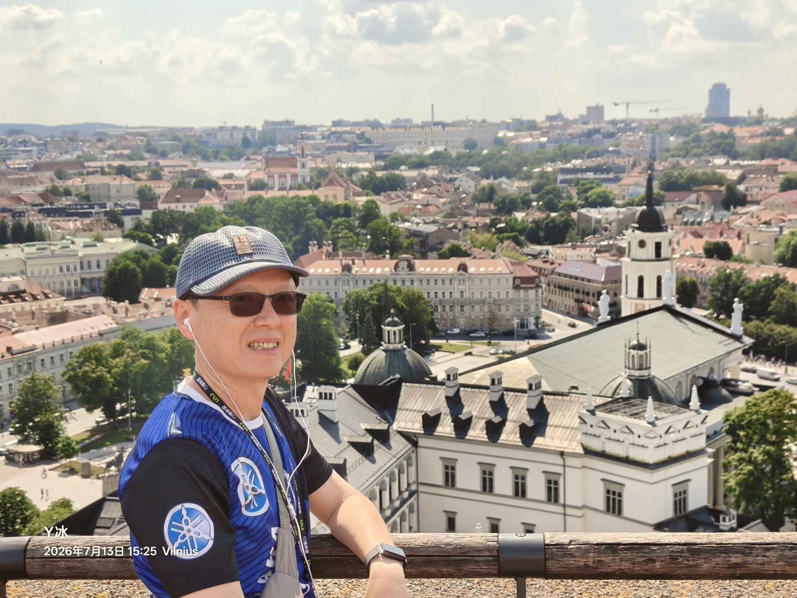
倚著欄杆吹著風，把這片景色深深記在心裡。爬上來的每一階，此刻都值得了。
下午轉進一處氣氛截然不同的地方——昔日 KGB 的地下牢房。
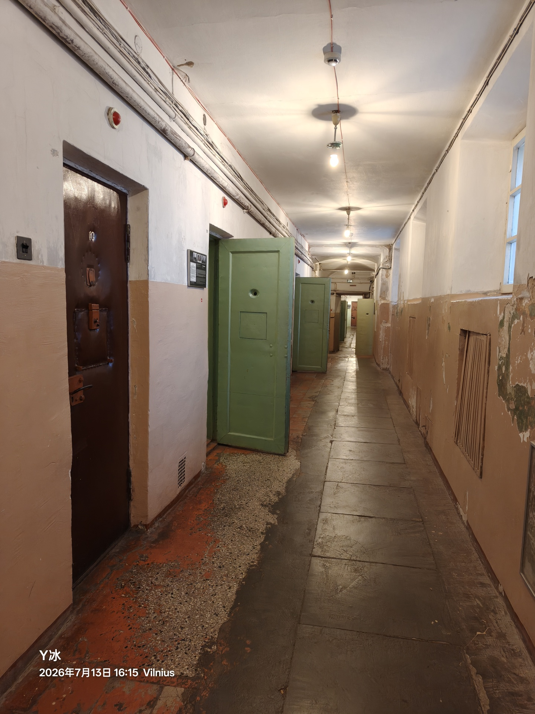
狹長的走廊兩側是一扇扇鐵門與綠漆囚室，燈光昏黃，空氣裡彷彿還凝著往日的沉重。走過這條走廊，才更能體會立陶宛人對自由的那份執著，是用什麼樣的代價換來的。
傍晚來到城郊的聖彼得與聖保羅教堂，米白色的外牆在夕照下泛著柔光。
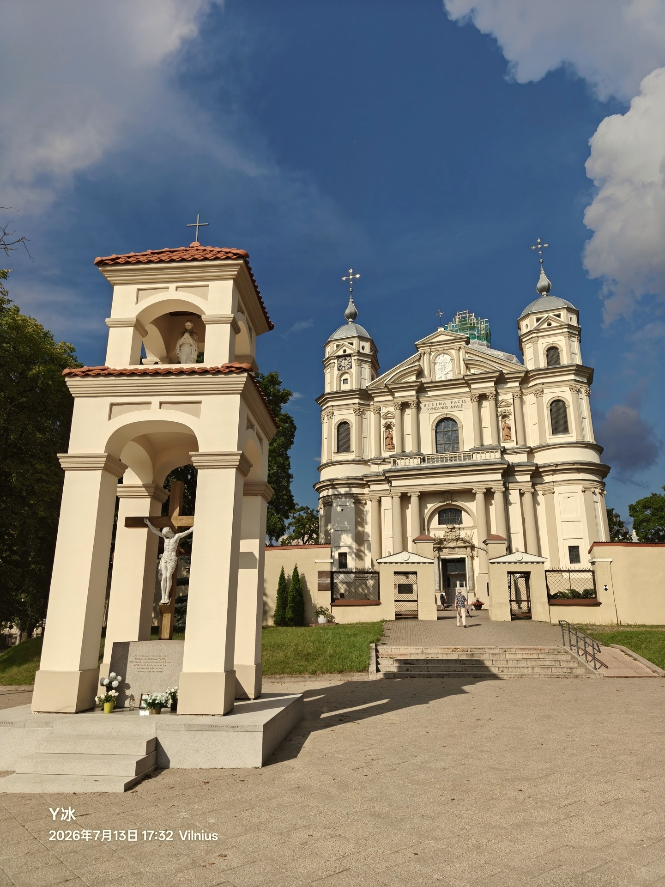
庭前立著一座木製十字架，腳邊擺著幾束鮮花。外觀看似樸素，聽說裡頭藏著兩千多尊灰泥雕像——可惜時間不夠，只能在門前多站一會兒，記下這份安靜。
夜色漸暗，回望老城，聖卡濟米爾教堂那頂鑲著金色皇冠的圓頂在暮光裡格外醒目。
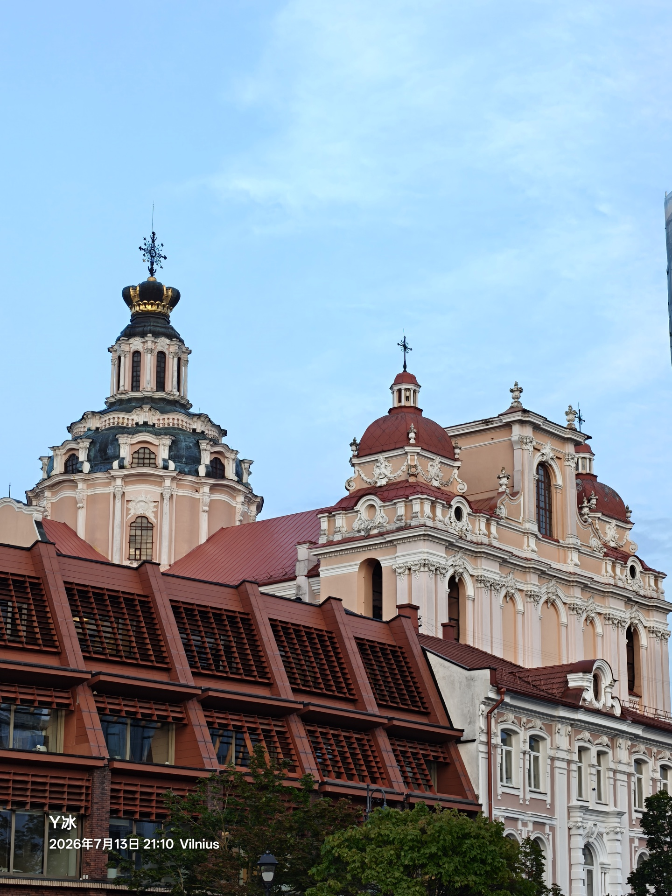
粉橘色的巴洛克立面與紅色屋瓦層層堆疊，柔和的天光把整座城染得溫潤。走了一整天，維爾紐斯用這樣一幕晚景，為今天畫下句點。
街角一家小店門口立著復古的櫻桃女郎立牌，店家遞來一小杯深紅的櫻桃酒。
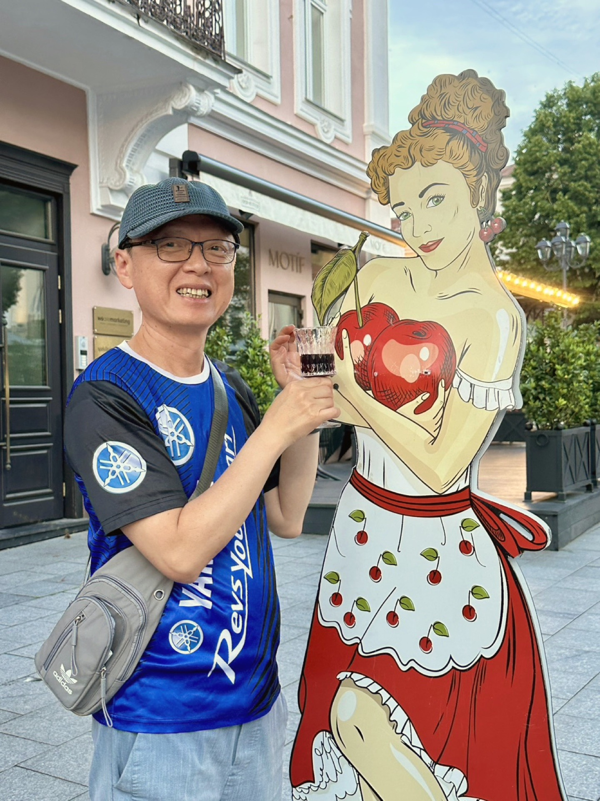
原本只是好奇嚐嚐，沒想到入口酸甜順口、後勁溫熱，意外地好喝！舉著杯子和俏皮的立牌合影，這杯立陶宛的櫻桃酒，成了今天最開心的小插曲。
晚餐換到百年餐廳的氛圍，紅色桌巾上先送上籃裡的黑麥麵包與細長麵包棒。

沙拉裡的藍莓與櫻桃番茄清新開胃，主菜是烤得金黃酥脆的鴨腿，配上烤根莖蔬菜與橙色果醬。最後以莓果醬淋在小蛋糕上收尾——立陶宛料理的豐盛與細緻，在這一天完整體驗。
離開維爾紐斯，途經特拉凱水中古堡後抵達考納斯。
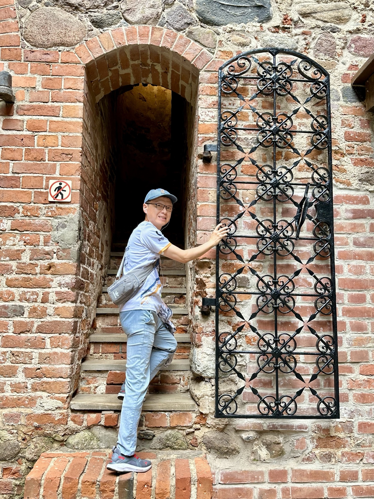
這座立陶宛最古老的石頭城堡，紅磚拱門與精緻鐵柵門在午後陽光下格外有味道。推開這扇門，彷彿一腳跨進中世紀的防禦工事——忍不住在門前留下這張照片。
沿著城堡內的磚石階梯往上走，牆面是歲月沉澱的紅磚與灰石交錯。
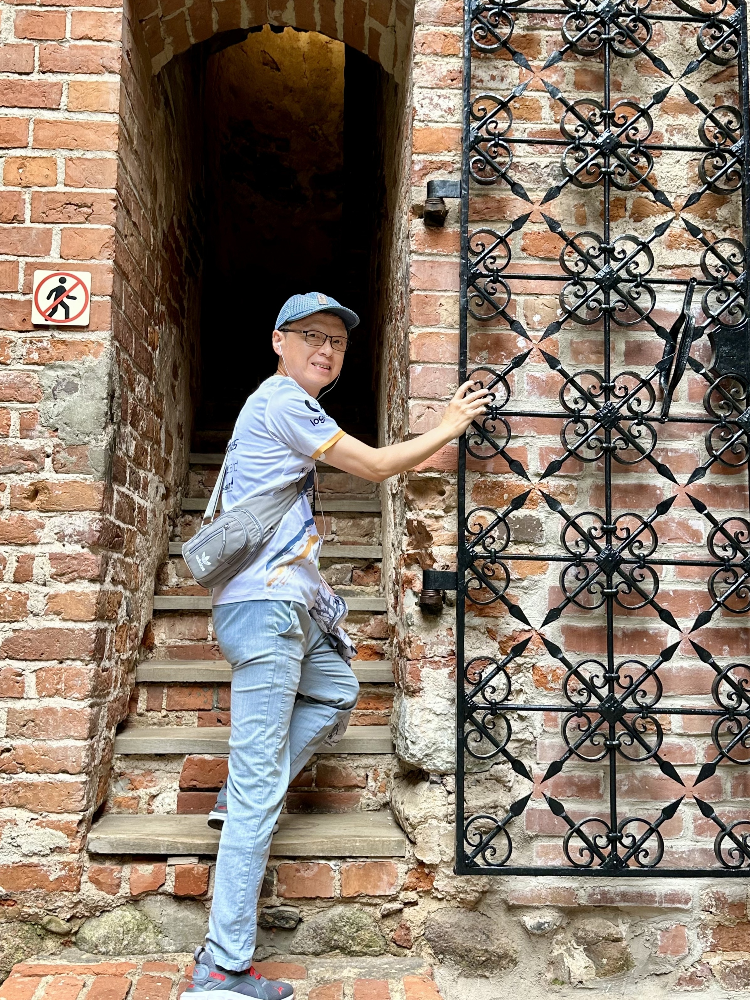
狹長的拱門通向幽暗的內部，鐵門上的紋飾在光影間若隱若現——雖然告示牌寫著禁止進入，還是忍不住在階梯前駐足，感受這座古城堡的滄桑與神祕。
13–14 世紀，橘紅色磚石，位於嘉維湖島上，以小木橋連接兩岸。
安排搭乘遊艇環繞湖畔遠眺古堡。
立陶宛最古老的石頭防禦城堡，中世紀建造。
沿途：市政廳廣場、主教堂、雷神之屋、維陶塔斯大教堂（哥德式建築）。
累計約五萬多件十字架。
蘇聯時期曾數度強制清除，民眾仍持續補插。
18 世紀巴洛克建築，設計師：巴特羅米歐。
內有黃金廳、白廳、玫瑰室。 晚上抵達里加（拉脫維亞首都）。
舊城廣場：市政廳、黑人頭之屋、羅蘭雕像。
二戰後重建。
教堂旁：格林童話《不萊梅樂手》雞貓狗驢樂隊雕塑。
條頓人 13 世紀建造，木管風琴 6768 支，波羅的海地區最大教堂。
建於 1698 年，瑞典殖民遺跡，舊城唯一保留的古城門。
錫古爾達，中古世紀城堡，可搭螺旋梯至瞭望塔。
岩石壁畫與文字。
趣味景點。
官方資料位置為 Smārde（Tukums），非錫古爾達；以官方景點外觀照作為行程代表圖。
戰後主教座堂遺址、市政廳廣場、塔圖大學（最古老）、AHHAA 科學中心。
愛沙尼亞度假海灣。
搭乘遊艇（約 1 小時）覽派爾努灣海岸與城市景觀。 晚上抵達塔林（愛沙尼亞首都）。
市政廳建設歷時三十年，屋頂老湯瑪士風向標。
廣場旁藥局自 1422 年開張至今。
陳列塔林史上軍事防禦系統、戰役、武器與刑具。
高聳尖塔曾為塔林舊城天際線地標。
中世紀商人宅邸，與里加三兄弟之屋並稱。
上城區堡壘山，東正教教堂，洋蔥頭尖頂，桃紅色外牆。
新鮮蔬果、肉類、麵包、超市、咖啡廳、文創小物。
展示愛沙尼亞傳統生活建築物、器具、農舍。
傍晚前往機場，搭乘 TK1424 返程。
預計 17:55 抵達台北。